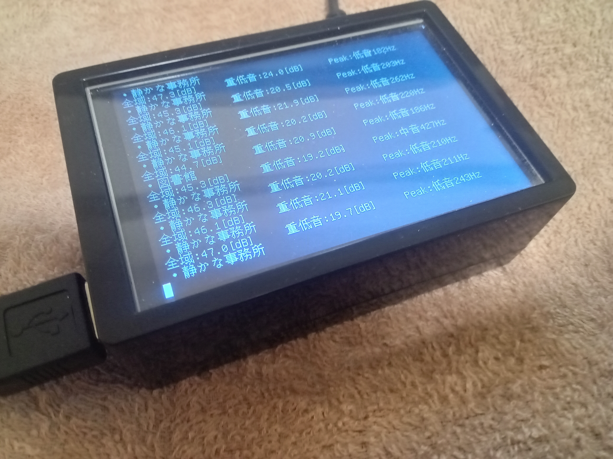
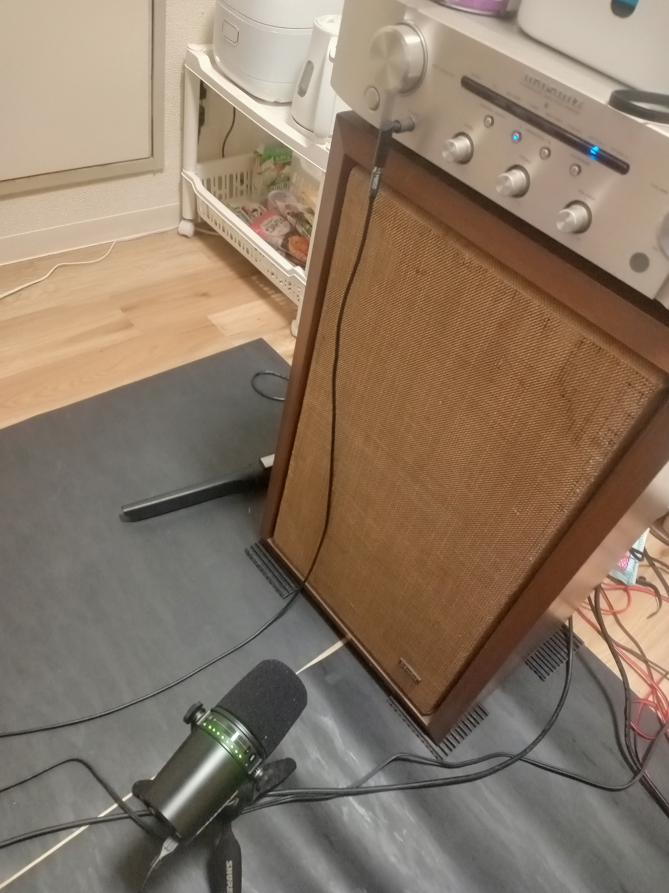
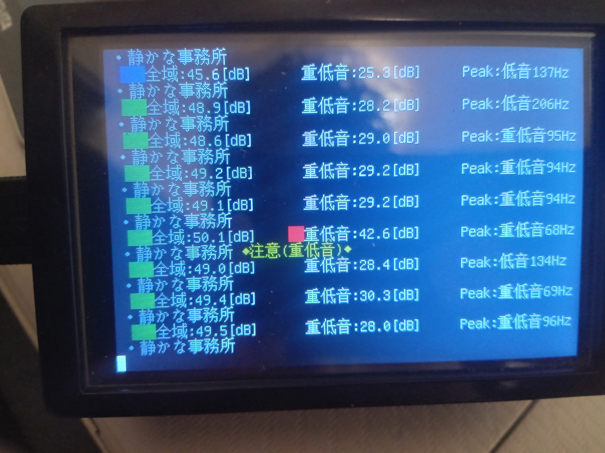

当システムは、Shure MV7が必須のシステムです。
特に、安価なマイクではノイズが大きすぎて正確な計測ができません。

マイクを、写真のようにスピーカーのすぐ前に設置してください。

このように、音量が表示されます。
【価格】
◆USBマイク Shure MV7 付き
￥90,000-
◆USBマイク Shure MV7 なし（別にお買い求め下さい）
￥50,000-
【連絡先】
E-mail：
info@tanaka-cs.co.jp
件名に、「騒音計 RasPi-MV7 購入希望」とお書き下さい。
TEL：
０９０−６１８７−１４１８